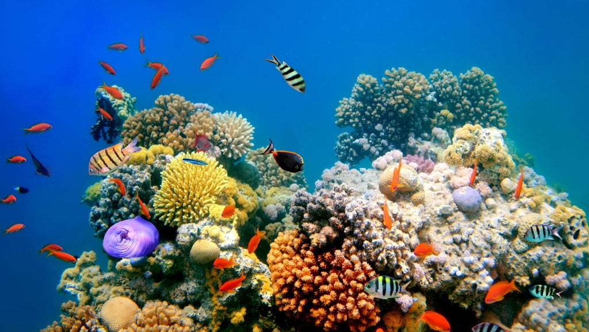

SDGs adalah komitmen global dan nasional dalam upaya untuk mensejahterakan masyarakat mencakup 17 tujuan dan sasaran global tahun 2030 yang dideklarasikan baik oleh negara maju maupun negara berkembang di sidang umum PBB pada September 2015. Ada 17 tujuan SDGs yang saling terkait dan saling mendukung untuk mengatasi berbagai tantangan global yang dihadapi.

Ekosistem Lautan
Tujuan no 14 dari 17 tujuan SDGs Ekosistem Lautan adalah Melestarikan dan memanfaatkan samudra laut, dan
sumber daya laut secara berkelanjutan untuk pembangunan. Segala sesuatu di Samudra dan laut adalah
penggerak sistem global yang membuat Bumi dapat dihuni oleh manusia. Mempelajari cara mengelola samudra
dan lautan sangatlah penting bagi kehidupan manusia secara keseluruhan.
Target Ekosistem Lautan
Mengelola dan melindungi ekosistem laut dan pesisir secara berkelanjutan untuk menghindari dampak buruk
yang signifikan, dengan memperkuat ketahanannya, dan melakukan restorasi untuk mewujudkan lautan yang
sehat dan produktif.
Meminimalisir dan mengatasi dampak pengasaman laut melalui kerjasama ilmiah yang lebih baik d i semua
tingkatan.
Pada 2020 Mengatur pemanen dan menghentikan penangkapan ikan yang berlebihan, penangkapan ikan ilegal
dan praktek penangkapan ikan dengan merusak.
2020 melarang bentuk-bentuk subsidi di perikanan tertentu yang berkontribusi terhadap kelebihan
kapasitas dan penangkapan ikan berlebihan, dan menghilangkan subsidi yang berkontribusi terhadap
penangkapan ilegal dengan tidak mengakui bahwa perlakuan khusus dan berbeda yang tepat dan efektif untuk
negara berkembang dan negara kurang berkembang harus menjadi bagian integral dari negosiasi subsidi
perikanan pada WTO.
Meningkatkan pelestarian dan pemanfaatan berkelanjutan lautan dan sumber dayanya dengan menerapkan hukum
internasional yang tercermin dalam the United Nations Convention on the Law of the Sea, yang menyediakan
kerangka hukum untuk pelestarian dan pemanfaatan lautan dan sumber dayanya.
Indikator Ekosistem Lautan SDGs
Persentase penurunan sampah terbuang ke laut.
Wilayah Pengelolaan Perikanan Negara Republik Indonesia secara berkelanjutan.
Proporsi tangkapan jenis ikan laut yang berada dalam batasan biologis yang aman.
Penerapan pendekatan berbasis ekosistem dalam pengelolaan areal lautan.
Kepadatan sampah plastik terapung.
Peran Indonesia dalam SDGs
Indonesia telah berperan aktif dalam program SDGs yang ditetapkan oleh perserikatan PBB. Peran Indonesia
antara lain menurunkan angka kemiskinan, pemberdayaan ekonomi kerakyatan melalui program Usaha Mikro
Kecil menengah, penghentian tambang liar, restorasi gambut, serta program substitusi bahan bakar ke
bahan bakar rendah karbon seperti B30 atau penggunaan kendaraan listrik. Selain berperan aktif dalam
mendukung program SDGs dan mengimplementasikannya di Indonesia, hal penting
lainnya yang harus disertai juga adalah pembinaan kepada masyarakat tentang pentingnya menjaga
kelestarian lingkungan hidup. “Kami tidak hanya memperbaiki kondisi fisik lingkungan namun sambil
mengedukasi masyarakat dengan melakukan tindakan tegas atas perusakan lingkungan” tutur Wapres.
Manfaat Kerjasama SDGs
Pemerintah Bangsa Indonesia
Manfaat kerjasama SDGs terhadap pemerintahan bangsa Indonesia dapat membantu pemerintah Indonesia
meningkatkan kesejahteraan rakyat melalui program pendidikan, perbaikan layanan kesehatan, dan
penyediaan air bersih dan sanitasi. SDGs mendorong kerjasama ekonomi antara negara-negara, yang dapat
membantu Indonesia menarik investasi asing, meningkatkan perdagangan, dan mengembangkan sektor-sektor
ekonomi yang berkelanjutan hal ini dapat menguatkan pertumbuhan ekonomi.
Indonesia dapat memperoleh akses teknologi yang lebih canggih dan pengetahuan baru yang dapat diterapkan
untuk meningkatkan pembangunan, mencakup teknologi energi terbarukan, pertanian berkelanjutan, dan
infrastruktur pintar. SDGs mendorong transparansi, akuntabilitas, dan partisipas dalam tata kelola
pemerintahan. Dengan adanya kerjasama Internasional dapat membantu Indonesia memperkuat sistem
pemerintahan dengan mengadopsi praktik-praktik terbaik.
Pencapaian SDGs berkontribusi pada stabilitas dan perdamaian dengan mengatasi faktor-faktor yang memicu
konflik seperti ketidaksetaraan sosial, kemiskinan, dan ketidakadilan. Kerjasama Multilateral dalam
pencegahan konflik dan pemulihan pasca-konflik juga memperkuat perdamaian dan keamanan di dalam negeri.
Rakyat dan Masyarakat
Peningkatan Kesejahteraan Sosial dan Ekonomi melalui kerjasama Internasional, program-program
pengentasan kemiskinan dapat diperkuat, membantu meningkatkan akses dan kualitas pendidikan,
memungkinkan lebih banyak anak dan dewasa untuk mendapatkan pendidikan yang layak dan mengurangi tingkat
buta huruf.
Layanan Kesehatan yang lebih baik dengan dukungan dari organisasi internasional dan negara-negara lain,
dan layanan kesehatan dapat ditingkatkan. Kerjasama dalam bidang kesehatan membantu dalam pengendalian
dan pencegahan penyakit menular dan tidak menular, dan meningkatkan kesehatan masyarakat.
Pengelolaan Sumber Daya Alam mendorong praktik-praktik berkelanjutan dalam pengelolaan hutan, perikanan,
dan sumber daya alam lainnya. Penanganan Perubahan iklim membantu masyarakat mengadopsi teknologi dan
praktik yang ramah lingkungan, dan mengurangi dampak perubahan iklim.
Keterlibatan komunitas SDGs melibatkan komunitas lokal dalam perencanaan dan pelaksanaan proyek.
Pemerintahan Bangsa Indonesia
Dampak Positif dari adanya kerjasama SDGs adalah Peningkatan Citra Indonesia. Indonesia dikenal sebagai
negara yang berkomitmen pada pembangunan berkelanjutan, meningkatkan reputasi dan hubungan diplomatik
Internasional. Melalui kerjasama Internasional, Indonesia dapat memperoleh bantuan finansial dan
teknologi untuk mendukung proyek pembangunan. Kerjasama internasional membantu pemerintah membuat
kebijakan yang lebih efektif.
Dampak Negatif adalah selalu bergantung pada bantuan internasional, dapat mengurangi kemandirian ekonomi
dan kedaulatan nasional. Implementasi program SDGs membutuhkan biaya yang besar, dapat membebani
anggaran negara jika tidak dikelola dengan dengan baik.
Rakyat dan Masyarakat
Dampak Positif bagi rakyat dan masyarakat adalah SDGs mendorong kesetaraan gender, mengurangi
ketidaksetaraan, dan memberdayakan kelompok masyarakat kecil dalam masyarakat. SDGs juga sering
melibatkan masyarakat lokal dalam perencanaan dan pelaksanaan, dan partisipasi dalam pembangunan,
membantu melestarikan sumber daya alam dan mengurangi dampak perubahan iklim, dan menjaga lingkungan
bagi generasi mendatang.
Dampak Negatif bagi rakyat dan masyarakat adalah Manfaat SDGs tidak merata di beberapa daerah atau
kelompok masyarakat tertinggal dalam penerimaan manfaat. Pelaksanaan proyek pembangunan bisa menimbulkan
konflik kepentingan antara pemerintah, dan masyarakat lokal.
Studi Kasus Ekosistem Lautan
Pada salah satu butir target yang ada di SDGs 14 menyebutkan bahwa pada tahun 2020, upaya konservasi
setidaknya 10 persen dari area pesisir laut, konsisten dengan hukum nasional dan internasional dan
berdasarkan informasi ilmiah terbaik yang tersedia. Target tersebut telah diupayakan oleh Ditjen
Pengelolaan Ruang Laut di tahun 2019 yang menyebutkan bahwa Kementerian Kelautan dan Perikanan beserta
Kementerian Lingkungan Hidup dan Pertanian telah mencatat dan menetapkan 23,14 Juta Ha atau sekitar 7,2%
dari luas wilayah perairan Indonesia telah dikelola baik oleh Pemerintah provinsi sekitar dengan bantuan
mitra. Contohnya adalah Provinsi Papua Barat yang telah melaksanakan konservasi perairan pesisir sebesar
kurang lebih 4,3 juta Ha dan konservasi Pulau-pulau Kecil sekitar 18,9% dari luas capaian nasional.
Pada butir lainnya menjelaskan bahwa pada tahun 2020 secara efektif meregulasi panen dan pengambilan
ikan secara berlebihan, pemancingan ilegal, tidak terlaporkan dan tidak teregulasi, juga praktek-praktek
pemancingan yang destruktif serta mengimplementasikan perencanaan manajemen berbasis ilmiah agar dapat
mengembalikan persediaan ikan secepat mungkin, setidaknya pada level dimana dapat memproduksi hasil
maksimum yang berkelanjutan sebagaimana karakteristik biologis masing-masing ikan. Dalam mencapai tujuan
tersebut, pemerintah Yogyakarta yang dikutip dari Bappeda Jogja Provinsi memfokuskan kebijakan regulasi
utama pada dua arah, yaitu: (1) pengelolaan pesisir serta pengembangan ekonomi kelautan yang
berkelanjutan, (2) pengelolaan kawasan konservasi perairan. Arah kebijakan tersebut, dilaksanakan dengan
beberapa upaya, yaitu: (1) meningkatkan tata kelola sumber daya kelautan, termasuk upaya penataan dan
pengelolaan wilayah laut beserta ekosistemnya, (2) meningkatkan upaya konservasi, rehabilitasi dan
peningkatan pengetahuan masyarakat terhadap bencana di pesisir dan laut, (3) mencegah terjadinya IUU
fishing dan kegiatan yang merusak ekosistem laut, (4) menguatkan peran SDM dan iptek dalam menjaga laut
serta budaya maritim, (5) meningkatkan produktivitas, optimalisasi stok sumber daya ikan, serta
pengembangan teknologi penangkapan ikan yang efisien dan ramah lingkungan.
Upaya dan Kegiatan yang dapat dilakukan adalah Konservasi dan pengelolaan berkelanjutan. Pemerintah
Indonesia telah bekerja sama dengan berbagai pihak, termasuk kementerian Kelautan dan Perikanan,
Kementerian Lingkungan hidup dan Organisasi internasional untuk melestarikan ekosistem laut.
Peningkatan Pengetahuan dan Partisipasi Masyarakat, peningkatan pengetahuan masyarakat tentang
pentingnya konservasi laut dan cara untuk melindungi ekosistem laut adalah bagian penting dari upaya
ini.
Hasil dan Dampak
Dengan adanya upaya konservasi dan pengelolaan berkelanjutan, ekosistem laut yang lebih sehat dapat
mendukung pertumbuhan ekonomi lokal melalui sektor-sektor seperti perikanan dan pariwisata. Upaya ini
dapat membantu melindungi keanekaragaman hayati laut, dan mengurangi pencemaran.
Pengaruh SDGs Terhadap Kerjasama Internasional
SDGs diadops oleh semua negara Pbb pada tahun 2015, berfungsi sebagai kerangka kerja global yang
mengarah upaya kolektif untuk mencapai pembangunan berkelanjutan hingga tahun 2030. SDGs menyediakan
kerangka kerja bersama yang digunakan oleh negara-negara di seluruh dunia. hal ini dapat memudahkan
negara-negara untuk bekerja sama karena memiliki tujuan yang sama. SDGs dapat mempengaruhi untuk
mendorong kerjasama di antara negara- negara melalui forum multilateral seperti PBB, G20, dan berbagai
organisasi internasional lainnya. Hal ini meningkatkan kemitraan antar negara untuk mencapai tujuan
bersama. Kerjasama Internasional dalam rangka SDGs memfasilitasi transfer teknologi dan pengetahuan dari
negara-negara maju ke negara-negara berkembang, membantu mengatasi tantangan pembangunan.
Program-program SDGs mendukung pembangunan kapasitas di negara-negara berkembang untuk memperkuat
institusi dan tata kelola pemerintahan mereka.